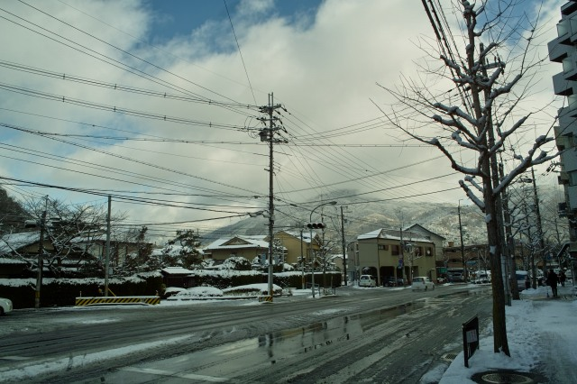
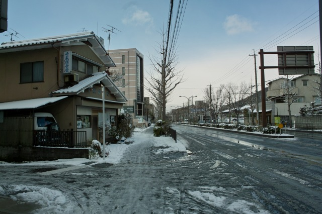
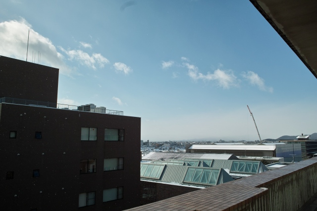

| ・雪 (H23.01.16-17) | |||
年末から松ヶ崎ではずっと雪を見ます。河原町じゃ見かけないですが、今出川より北は別。16の夜から17の朝まで降雪。 |
|||
|
16日の21時ごろ |
帰るのイヤになります | ||
|
|
| ||
|
自転車がうまくすすみません |
カラーバー的なのはかろうじて見えます | ||
|

明けて17日、比叡山はこのとおり |

北山通りはこんな感じに。夜はEisbahnに? | ||
|
だいたい溶けてきてます |
雪だるま発見！ | ||
|
桜が咲いてます |
| ||
|
東山の方は降ってます |

新区役所の方は晴れ | ||